넉 달 만에 50만 명, 늘어나는 1인 창업
이야기는 숫자 하나로 시작해요. 2025년에 20대 개발자 셋이 웹사이트 도구를 하나 내놨고, 넉 달 뒤 사용자가 50만 명이 됐어요. 화면 오른쪽 작은 창이 그 도구의 첫 화면이에요. 'Make anything'이라는 문구와 입력창이 보여요.
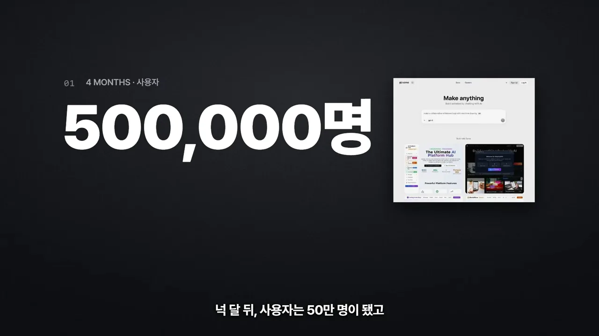
매출은 연 반복 매출 기준 300만 달러 수준이었어요. 내레이션은 '40억 원이 넘는다'고 하고, 뒤에 나오는 화면에는 '$3M ≈ 42억 원'이라고 적혀 있어요. 영상은 이 팀이 대단한 새 AI를 만든 게 아니라고 먼저 못 박아요. 이미 있는 AI를 딱 하나의 문제에 가장 빨리 꽂았을 뿐이라는 거예요. 사업 계획서도 투자 설명회도 없이, 일단 만들어서 공개했어요.
셋 중 하나는 혼자 시작한 회사
영상은 이게 한 팀만의 이야기가 아니라고 말해요. 아래 막대 두 개가 근거예요. 회색 막대는 2019년 미국에서 새로 생긴 스타트업 중 1인 창업 비율 23.7%, 보라색 막대는 2025년 상반기 36.3%예요. 새로 생기는 회사 셋 중 하나는 대표 혼자 시작한 회사인 셈이에요.
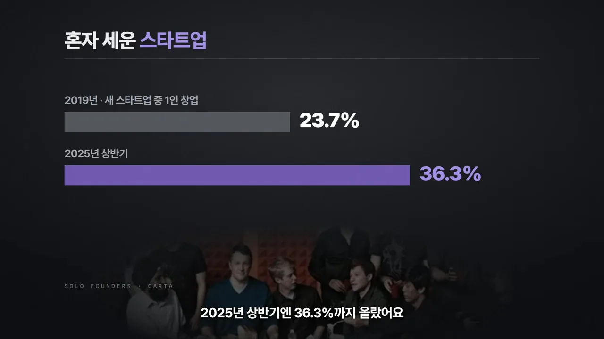
영상이 보는 차이는 태도예요. 기성세대 창업자는 실패하면 얼마를 잃는지 먼저 계산하고 신중해져요. 지금 20대는 그 값을 계산하기 전에 이미 만들어서 내놓아요. 이 차이가 속도를 만든다는 게 영상의 설명이에요. 다만 빨리 뜬 만큼 빨리 사라지는 회사도 많다고 미리 경고해 둬요.
그래서 영상은 세 가지 질문을 차례로 따라가요. 화면의 표가 그 순서예요. 01 어떻게 이렇게 빠른가, 02 그들의 무기, 03 속도의 그림자예요. 마지막 줄 끝에만 물음표가 붙어 있어요.
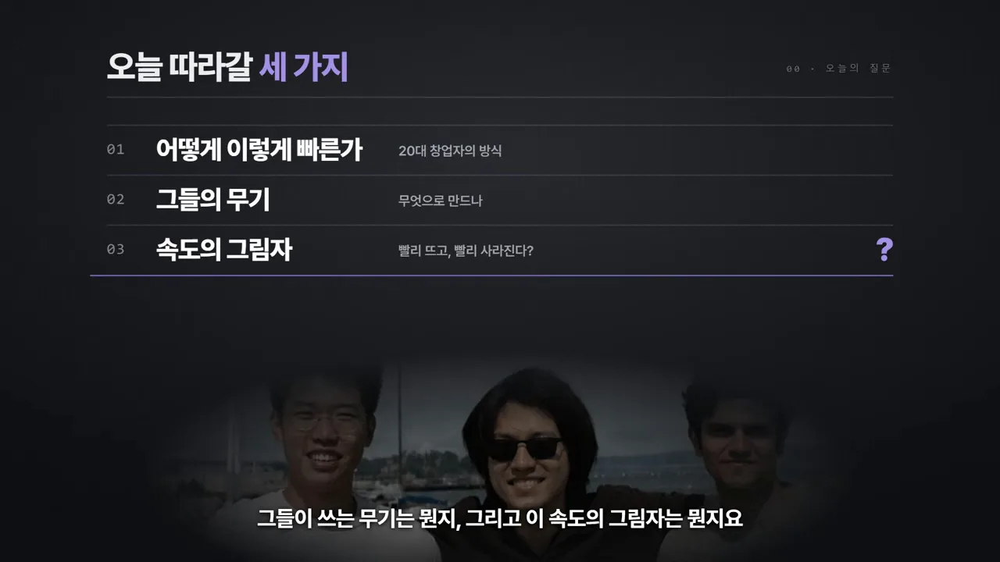
세임은 무엇이고 누가 만들었나
그 도구의 이름은 세임(Same)이에요. 화면은 쓰는 방법을 세 칸으로 보여 줘요. 01 마음에 드는 사이트의 웹사이트 주소를 넣으면, 02 AI가 똑같이 다시 만들고, 03 '색은 이렇게, 버튼은 저렇게'처럼 말로 수정해요.
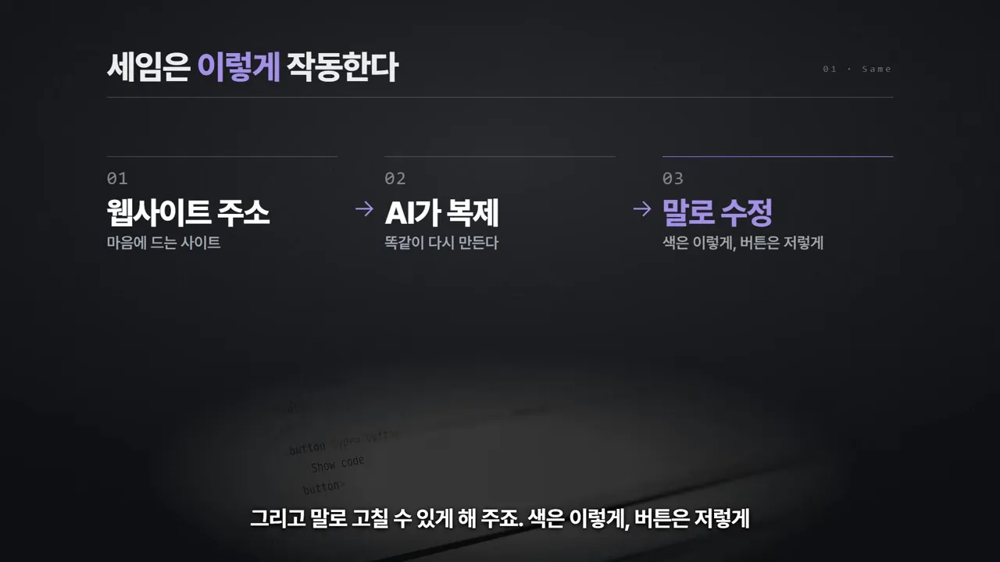
만든 사람은 Z세대 창업자로 소개된 세 명이에요. 사진 왼쪽 아래 자막에 이름이 적혀 있어요. 에이든 바이, 니사르그 파텔, 존 양이에요.
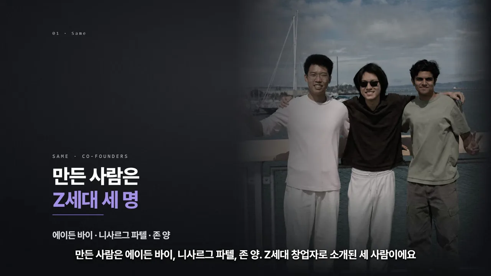
무료로 나눠 준 도구가 첫 사용자를 데려왔어요
이들은 원래 웹사이트가 느려지는 원인을 찾아 주는 성능 도구를 만들어 무료로 공개한 사람들이었어요. 개발자들 사이에선 꽤 알려진 도구였어요. 영상은 돈을 받지 않고 나눠 준 이 도구가 결국 가장 큰 홍보였다고 봐요. 아래 슬라이드가 그 흐름이에요. 왼쪽 'YEARS' 아래 '오픈소스로 쌓은 신뢰와 팬'이, 오른쪽 'DAY 1' 아래 '새 제품의 첫 사용자'로 이어져요.
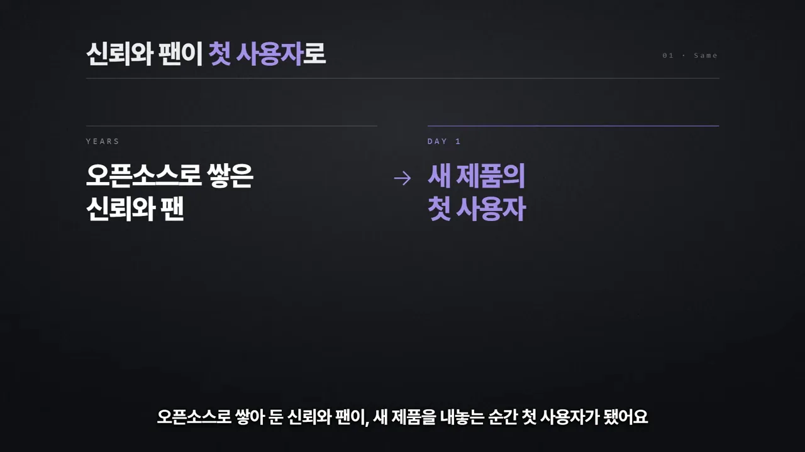
새 기술이 아니라 빠른 연결
영상이 거듭 강조하는 대목이에요. 화면 왼쪽 회색 글자 '새로운 AI 개발'에는 '아니다'가 붙어 있고, 오른쪽 보라색 글자가 실제로 한 일이에요. '있는 AI 모델 + 웹사이트 만들기', 즉 구체적인 문제에 가장 빨리 연결한 거예요.
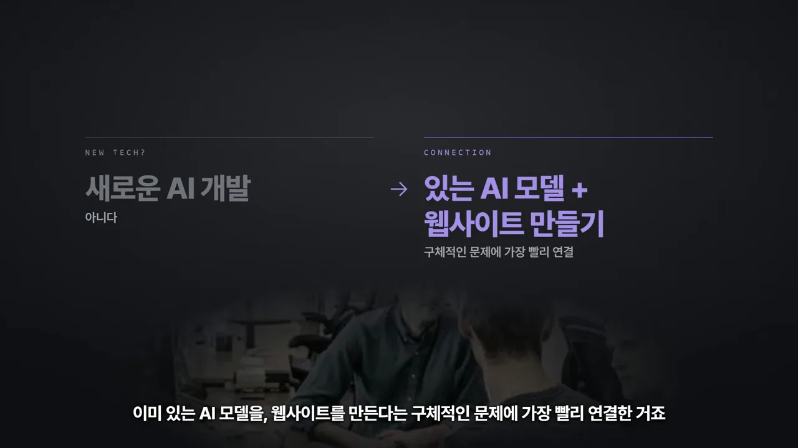
준비보다 출시, 과정은 공개로
영상이 꼽는 20대 창업자들의 공통점은 단순해요. 준비가 다 됐을 때 시작하지 않아요. 아이디어가 떠오른 그날 바로 만들기 시작하고, 시장 조사와 사업 계획서는 나중으로 미뤄요. 만든 걸 사람들이 실제로 쓰는지가 가장 정확한 시장 조사라고 믿기 때문이에요.
완성 전에 공개하고, 욕먹으면서 고쳐요
아래 표는 네 줄이 한 바퀴를 이뤄요. 01 완성되기 전에 공개하고, 02 '버그 있어요', '이거 별로' 같은 비판 댓글을 받고, 03 그 피드백을 다음 버전의 재료로 수정하고, 04 다시 공개해요. 마지막 줄 오른쪽의 둥근 화살표가 이 고리가 반복된다는 표시예요.
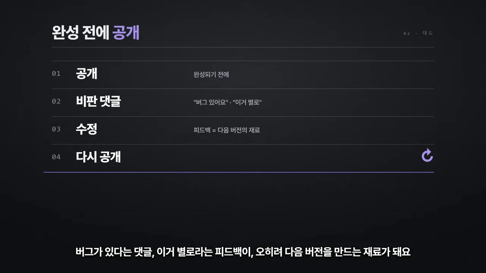
만드는 과정도 광고가 돼요
만드는 과정도 숨기지 않아요. 화면의 카드 세 장이 SNS에 올리는 글의 예시예요. 'DAY 1 오늘 만든 것: 로그인', 'DAY 2 사용자 120명', 'DAY 3 첫 매출 $9'처럼 그날 만든 것, 쓴 사람 수, 번 돈을 그대로 올려요. 이걸 공개 빌딩이라고 해요.
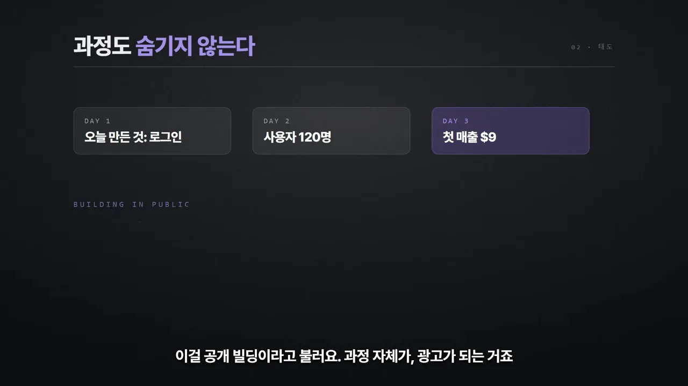
영상은 사람들이 완성된 제품보다 만들어지는 이야기를 더 따라온다고 설명해요. 처음부터 지켜본 사람들이 제품이 나오는 날 가장 먼저 돈을 내는 손님이 된다는 거예요.
그들의 무기는 생각보다 단순해요
쓰는 도구는 세 가지예요. 화면 표의 오른쪽 보라색 동사가 각 도구의 역할이에요. 코드는 AI 코딩 도구로 짜고, 기획과 문구는 챗봇으로 뽑고, 결제는 온라인 결제 서비스로 받아요.
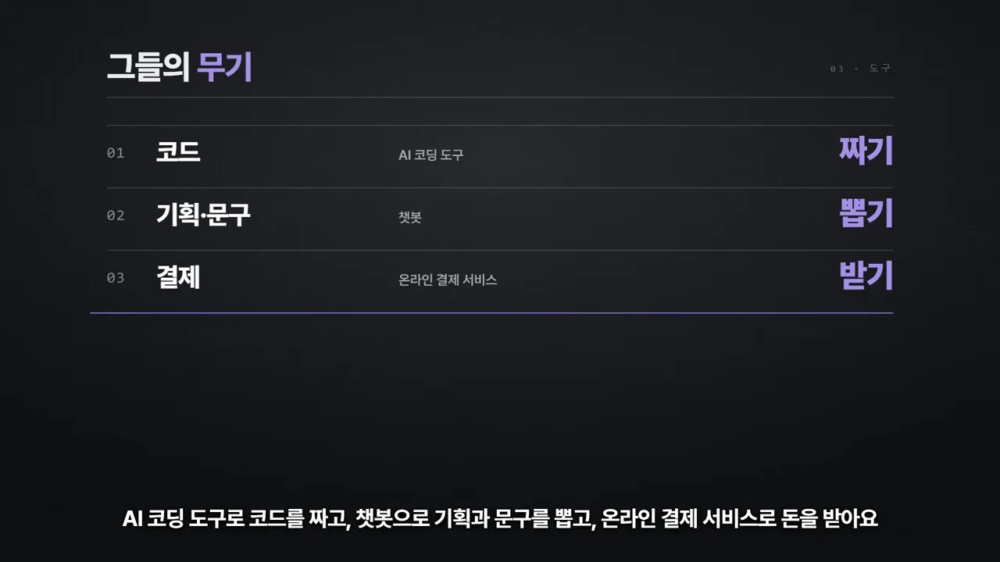
영상은 이게 예전엔 개발자, 디자이너, 마케터가 따로 필요하던 일이라고 덧붙여요.
그런데 영상은 곧바로 '중요한 건 도구가 아니'라고 말해요. 도구는 이제 누구나 쓰니까요. 차이는 아이디어에서 첫 사용자까지 가는 시간이에요. 아래 막대가 그 차이예요. 위쪽 긴 회색 막대는 '몇 달 고민', 아래쪽 짧은 보라색 막대는 '주말 사이'예요.
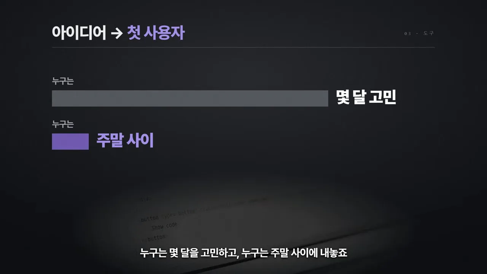
이들에게 AI는 새로 배워야 하는 기술이 아니라 스마트폰처럼 처음부터 손에 있던 환경이에요. 그래서 망설임 없이 쓰고, 버리고, 다시 써요. 새 AI 모델이 나오면 그날 바로 갈아타는 것도 자연스러운 일이에요.
속도의 그림자와 남는 회사의 조건
여기서 영상은 방향을 틀어요. 이 빠른 방식에도 그림자가 있다는 거예요. 영상이 꼽는 그림자는 세 가지예요.
| 그림자 | 무슨 뜻인가요 | 영상이 든 근거 |
|---|---|---|
| 쉽게 따라 만들어져요 | 쉽게 만든 제품은 남도 쉽게 만들어요 | 비슷한 도구가 몇 주 만에 수십 개 |
| 숫자가 부풀기 쉬워요 | 매출은 대부분 창업자가 직접 밝힌 숫자예요 | 가장 잘 나온 한 달 × 12 |
| 투자에서 불리해요 | 혼자 빨리 시작할 순 있어도 크게 키우긴 어려워요 | 1인 창업 30%, 투자금 14.7% |
첫째, 몇 주 만에 수십 개
화면 왼쪽 위 보라색 칸 하나가 세임 같은 원조 도구예요. 그 옆으로 회색 칸이 세 줄 가득 찼어요. 비슷한 도구가 몇 주 만에 수십 개 쏟아지는 모습을 그린 거예요.
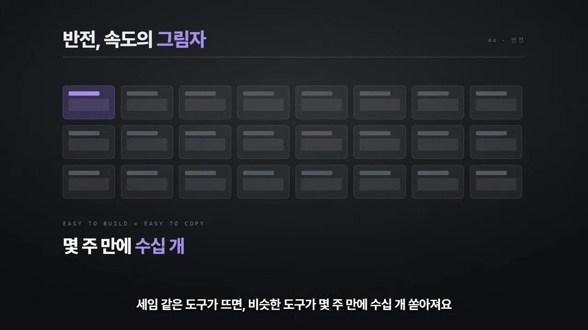
둘째, 부풀리기 쉬운 매출 숫자
표의 둘째 줄을 보세요. 01 매출 출처는 '자체 발표', 02 연 반복 매출은 '부풀리기 쉬움'이에요. 아래 '최고의 한 달 × 12 = ?'가 이유예요. 가장 잘 나온 한 달 매출에 12를 곱하면 그게 1년 내내 이어질 것처럼 보이니까요.
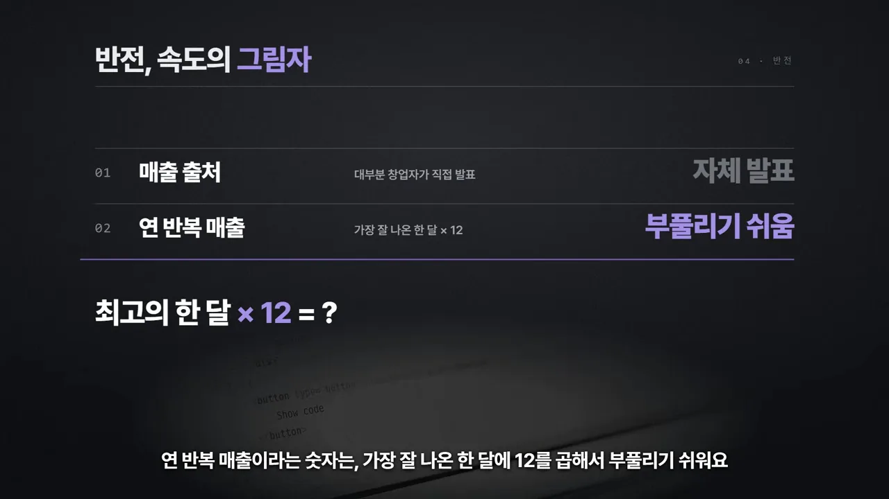
셋째, 1인 창업은 투자에서 불리해요
막대 두 개를 비교해 보세요. 위 회색 막대는 2024년에 생긴 스타트업 중 1인 창업 비율 30%, 아래 보라색 막대는 이들이 받은 투자금 비중 14.7%예요. 회사 수로는 열에 셋인데 돈은 그 절반 정도만 받은 거예요.
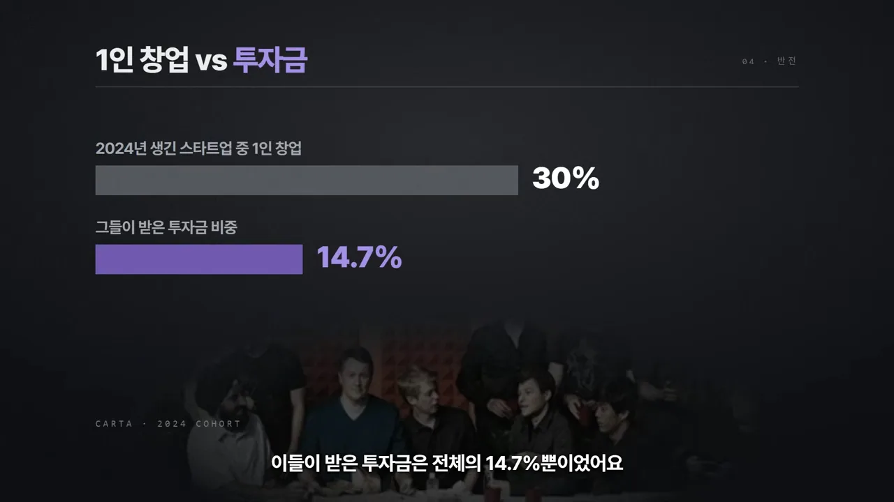
남는 회사의 조건
그래서 남는 질문은 이거예요. 빨리 시작하는 건 이제 누구나 할 수 있으니, 그다음에도 남아 있을 이유를 만들 수 있느냐는 거예요. 영상은 빨리 뜨고도 오래 남는 회사의 공통점을 '사용자와 가장 가까이 있다'로 정리해요. 화면의 네 칸이 그 고리예요. 사용자 피드백을 듣고, 매주 수정하고, 더 나은 제품을 만들고, 더 많은 사용자를 모아요.
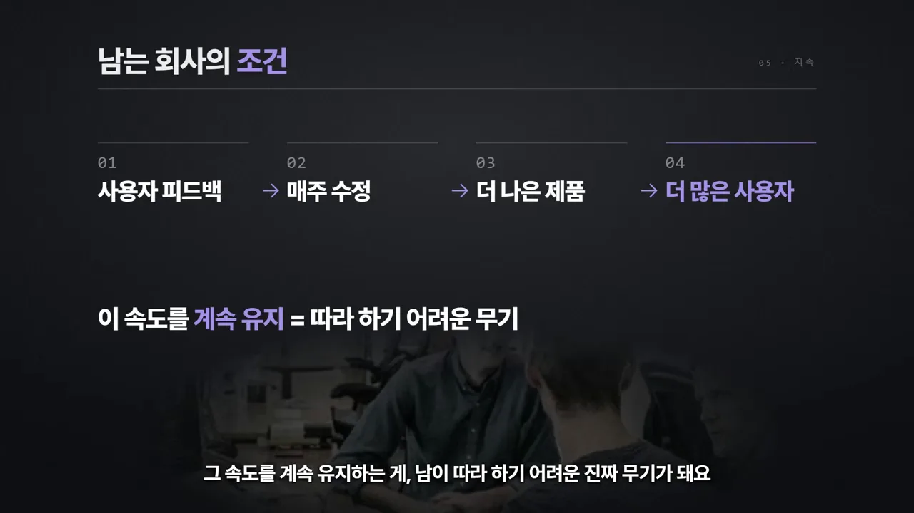
앞의 '완성 전에 공개' 고리와 닮았지만 강조점이 달라요. 출시 직후 한 번 돌리는 게 아니라 계속 돌리는 거예요. 영상 말로는 제품은 몇 주면 베낄 수 있어도 사용자와 쌓은 관계는 베낄 수 없어요.
세임도 마찬가지였어요. 아래 선의 왼쪽 끝은 '몇 년' 동안 오픈소스로 쌓은 개발자들의 신뢰, 오른쪽 끝은 '넉 달' 만의 세임 50만 명이에요. 넉 달 만의 성공처럼 보이는 것 뒤에 몇 년짜리 준비가 있었다는 뜻이에요.
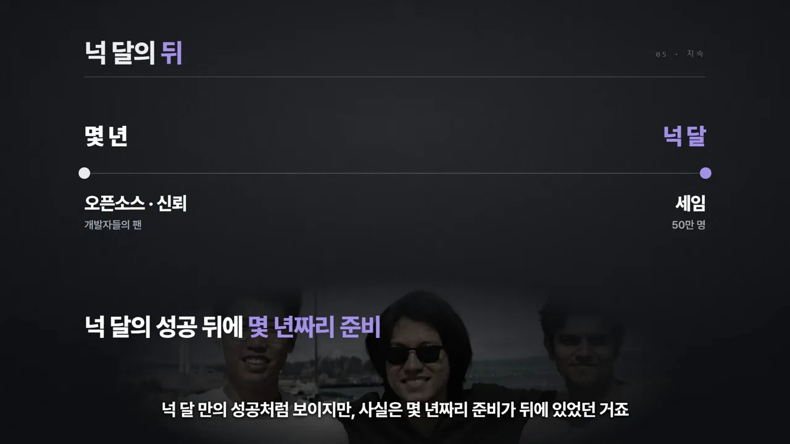
왜 지금이고, 이번 주에 뭘 해 볼까
그럼 왜 하필 지금일까요. 영상의 답은 AI 코딩 도구가 만드는 장벽을 거의 없앴다는 거예요. 화면의 두 막대가 그 차이예요. 위쪽 긴 회색 막대는 '예전 · 코딩 배우기', 몇 년이 걸렸어요. 아래쪽 짧은 보라색 막대는 '지금 · 말로 설명하면' 돌아가는 프로그램이 나온다는 뜻이에요.
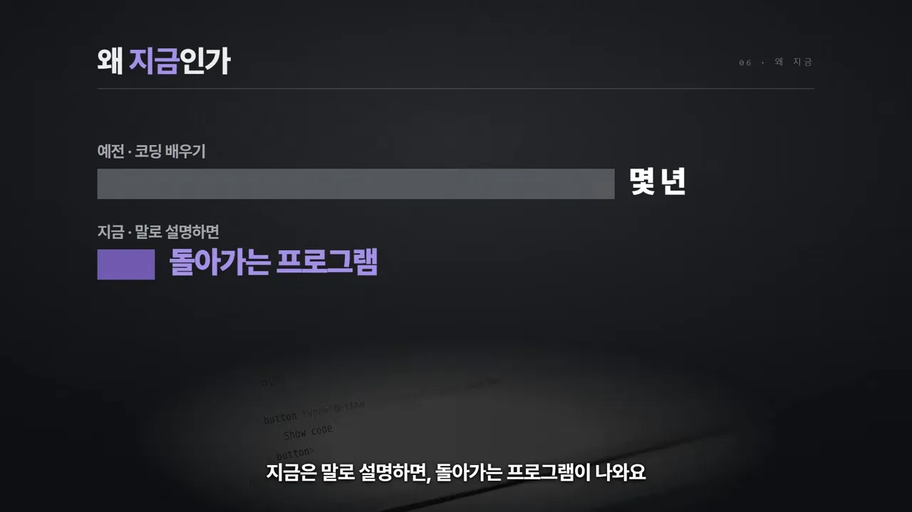
그러니 남은 장벽은 기술이 아니라 시작하기 전의 두려움이라고 영상은 말해요. 그리고 이건 나이와 상관없다고 해요. 20대가 아니어도, 마흔이든 쉰이든 오늘 시작한 사람이 그 세대의 방식으로 일하는 거예요.
이번 주에 해 볼 세 가지
영상은 나이와 상관없이 이번 주에 해 볼 일을 세 칸으로 정리해요. 각 칸 아래 작은 글씨가 영상이 덧붙인 설명이에요.
- 주말에 하나 만들기 — 미뤄 둔 아이디어 하나를 골라요. 완벽하지 않아도 돌아가기만 하면 돼요. AI에게 원하는 걸 말로 설명하는 데서 시작해요.
- 과정을 공개하기 — 오늘 만든 것 하나, 배운 것 하나를 올려요. 그게 첫 사용자를 부르는 광고가 돼요.
- 오래 남을 이유 찾기 — 내가 남들보다 더 잘 아는 사용자, 더 가까이 있는 사용자가 누군지 생각해요. 베낀 제품이 쏟아져도 그 사람들은 곁에 남아요.
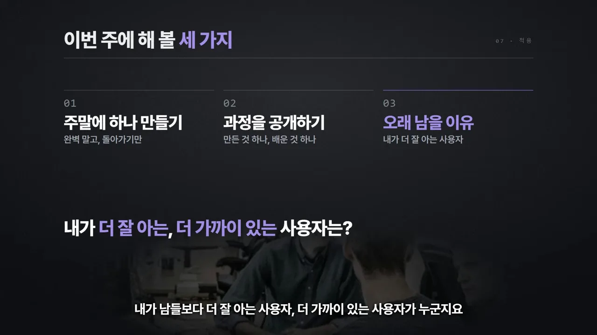
정리하면
영상의 마지막 표는 처음에 던진 세 질문에 한 단어씩 답해요. 어떻게 빠른가는 '출시 먼저', 그들의 무기는 '시간', 속도의 그림자는 '남을 이유'예요. 가운데 작은 글씨에는 각각 '새 기술 대신 빠른 연결 · 준비 대신 공개', '도구보다 아이디어 → 첫 사용자까지의 시간', '복제 · 부풀린 숫자 · 투자 격차'가 적혀 있어요.
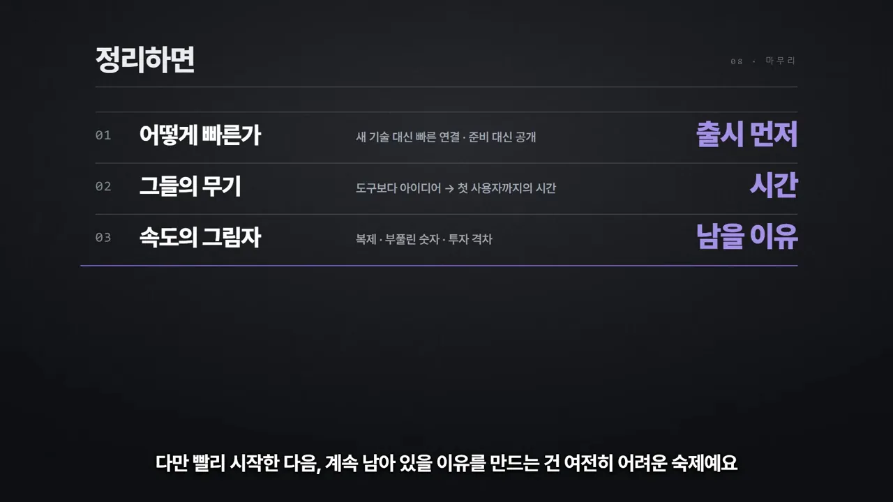